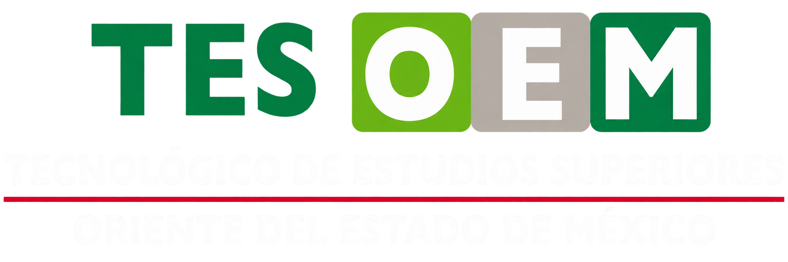
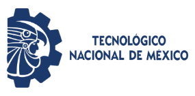
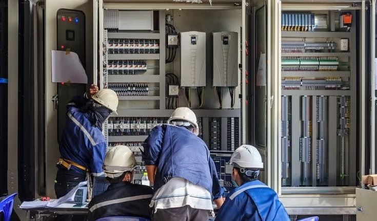

Java para aplicaciones web con Servlets
Construye aplicaciones web con Servlets, JDBC y el patrón DAO.
Consultar curso
Secretaría de Educación, Ciencia, Tecnología e Innovación

Profesores comparten su experiencia, los estudiantes fortalecen sus habilidades y las empresas encuentran talento preparado.
Desarrolla habilidades y obtén certificaciones.
Publica cursos y comparte tu experiencia.
Encuentra talento y colabora en proyectos.
Conecta conocimientos con oportunidades reales.
Capacítate con contenido desarrollado por profesores del TESOEM.
Construye aplicaciones web con Servlets, JDBC y el patrón DAO.
Consultar curso
Aprende programación en escalera aplicada a líneas de producción.
Consultar cursoConoce los principios de diseño e instalación de sistemas solares.
Consultar cursoIdeas que convierten el conocimiento en soluciones.
Aplicación web para registrar entradas y salidas de herramientas y materiales.
Desarrollo de softwarePanel de seguimiento para visualizar consumo y apoyar decisiones de eficiencia.
Ingeniería aplicadaSistema para organizar horarios de uso de equipo especializado.
Soluciones digitales